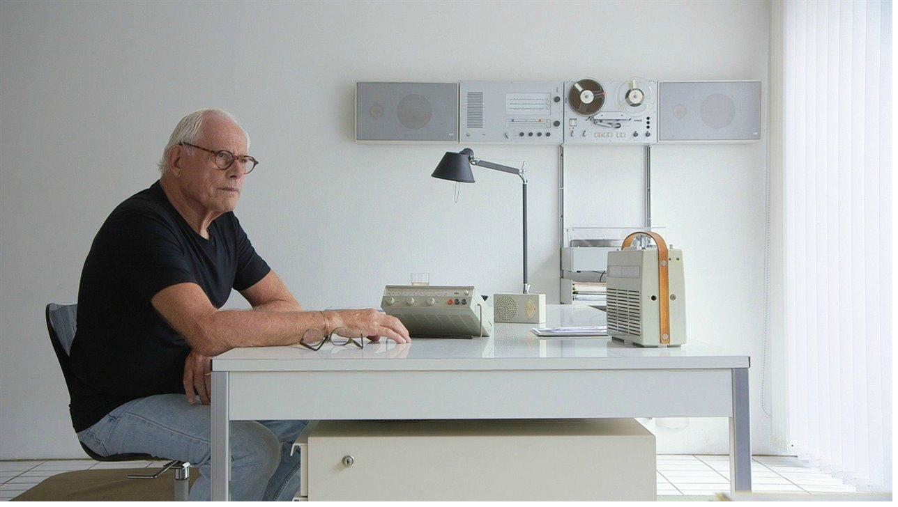
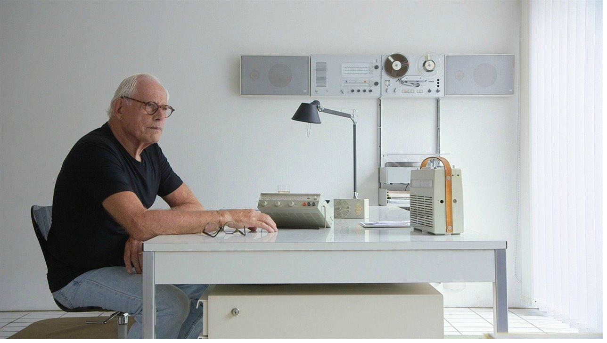

Bienvenido
Dieter Rams es uno de los diseñadores industriales más influyentes del siglo XX. Su trabajo en Braun y Vitsoe marcó la historia del diseño.
Dieter Rams, pionero del diseño funcional.
Dieter Rams es uno de los diseñadores industriales más influyentes del siglo XX. Su trabajo en Braun y Vitsoe marcó la historia del diseño.
Dieter Rams, pionero del diseño funcional.